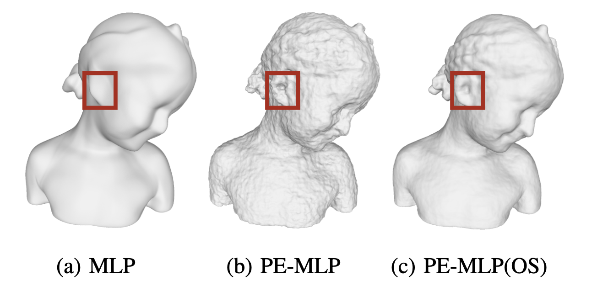

On Optimal Spatial Sampling for Learning SDF with Positional Encoding
- 1The University of Hong Kong,
- 2The University of British Columbia,
- 3City University of Hong Kong,
- 4Zhejiang University,
- 5Texas A&M University
Abstract
Neural implicit fields, such as the signed distance field (SDF) of a shape, emerge as a powerful tool for many applications like representing a 3D shape and performing collision detection of these shapes. Typically, implicit fields are encoded by Multilayer Perceptrons (MLP), which brings advantages of compactness, smoothness, and topological flexibility. However, it often fails to capture high-frequency details due to the low-frequency essence of MLPs. To overcome this, sinusoidal positional encoding (PE) has become a popular and effective approach to enhancing the ability of the MLP to model high-frequency details in the target implicit field. However, a notable side effect of introducing PE to MLP is the noisy artifacts present in the learned implicit fields. The higher is the frequency components in PE, the more severe is this side effect. While increasing the sampling rate could in general mitigate these artifacts, in this paper we aim to provide an explanation for this adverse phenomenon through the lens of Fourier analysis and devise a tool for recommending the appropriate sampling rate necessary for learning an accurate neural implicit field without the undesirable side effects of using the PE.
Specifically, we define the intrinsic frequency of a neural network (with or without PE) and propose a simple yet effective method for computing this intrinsic frequency of a given network based on Fourier analysis of the network with randomized weights. It is observed that a PE-equipped MLP has an intrinsic frequency much higher than the highest frequency component in the PE layer. Based on this observation, we recommend that the training sampling rate be determined by the intrinsic frequency of the PE-equipped MLP network. We show empirically that this sampling rate is also sufficient in the sense that further increasing the sampling rate would not further noticeably decrease the fitting error. We validate our conclusions and methods in the setting of fitting SDF and show that the training strategy recommended by our study leads to superior performance than the existing methods.
